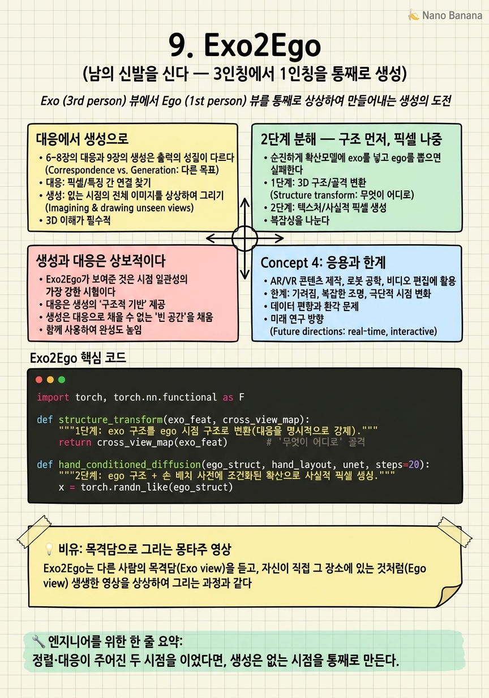

Exo2Ego
타인의 하루를 3인칭으로 지켜보다가, 문득 '그 사람 눈으로는 어떻게 보일까'가 궁금해진다. 기계가 그 1인칭 시야를 픽셀까지 그려낼 수 있을까?

🎯 학습 목표
- 대응(매핑)과 생성(재구성)의 근본적 차이를 안다
- exo→ego 생성이 왜 어려운 다중모드 문제인지 이해한다
- 구조 변환 + 픽셀 확산의 2단계 분해 이유를 설명한다
- 손 배치(hand-layout) 사전이 생성을 조건화하는 역할을 안다
- 생성 계열이 대응 계열과 상보적인 지점을 파악한다
1~8장은 두 갈래였다. 표현을 정렬(1~5장)하거나 객체를 대응(6~8장)시켰다. 둘 다 주어진 두 시점을 잇는 일이다. Exo2Ego(ECCV 2024, 'Put Myself in Your Shoes')는 질적으로 다른 것을 한다. 없는 시점을 통째로 만든다.
과제는 이렇다. 3인칭(exo) 영상만 주어졌을 때, 그 사람의 1인칭(ego) 영상 — 손이 화면을 채우고 조작 객체가 클로즈업된, 사실적인 첫 사람 시점 — 을 생성한다. 이것은 시점 일관성의 가장 강한 형태다. 대응이 "저 컵이 여기"라면, 생성은 "당신 눈에는 이 컵이 이렇게 보일 것"을 픽셀로 그린다.
왜 어려운가? exo→ego는 극도로 다중모드다. 같은 3인칭 장면에 대해 1인칭 시야는 머리 방향·주목 대상에 따라 무수히 갈린다. 게다가 ego 특유의 손·조작 디테일을 사실적으로 만들어야 한다. Exo2Ego는 이를 2단계로 분해한다. 먼저 명시적 구조 변환으로 cross-view 대응을 강제하고(무엇이 어디로 가는가), 그 위에 손 배치 사전에 조건화된 확산으로 픽셀을 환각(hallucinate)한다(어떻게 보이는가).
핵심 내용
대응에서 생성으로
6~8장의 대응과 9장의 생성은 출력의 성질이 다르다.
| 축 | 대응(correspondence) | 생성(generation) |
|---|---|---|
| 입력 | 두 시점 모두 | 한 시점만 |
| 출력 | 매핑(마스크·대응) | 새 시점의 픽셀 |
| 질문 | 이게 저기 어디인가 | 저기서는 어떻게 보이는가 |
대응은 두 시점이 모두 있어야 잇는다. 하지만 실전에서는 종종 한 시점만 있다. 3인칭 시연 영상만 있고 로봇의 1인칭은 아직 없다. 이때 필요한 건 잇기가 아니라 만들기다.
Exo2Ego는 시점 일관성을 생성 문제로 재정의한다. "두 시점이 일관되다"의 궁극은 "한 시점에서 다른 시점을 정확히 예측(생성)할 수 있다"는 것이다. 5장 Rosetta Stone이 feature를 생성했다면, Exo2Ego는 픽셀을 생성한다. 사람이 볼 수 있는 사실적 영상을.

2단계 분해 — 구조 먼저, 픽셀 나중
순진하게 확산모델에 exo를 넣고 ego를 뽑으면 실패한다. 시점 변환의 기하적 구조와 사실적 텍스처를 한 번에 처리하려다 둘 다 놓친다. Exo2Ego는 문제를 둘로 가른다.
1단계. 명시적 고수준 구조 변환. 먼저 exo의 장면 구조를 ego 시점의 구조로 변환한다. "이 객체가 1인칭 시야의 이 위치·이 배치로 온다"는 cross-view 대응을 명시적으로 강제하는 단계다. 여기서 6~8장의 대응 사고가 생성 안으로 흡수된다. 대응이 생성의 골격이 된다.
2단계 — 손 배치 조건 확산. 구조가 정해지면, 그 위에 확산모델이 사실적 픽셀을 채운다. 핵심 조건이 손 배치 사전(hand-layout prior)이다. ego 영상의 정체성은 손이다 — 화면을 채우는 손과 그것이 쥔 객체가 1인칭임을 규정한다. 손 배치를 조건으로 주면, 확산이 '아무 1인칭'이 아니라 '이 행동을 하는 이 손의 1인칭'을 그린다.
\[\text{exo} \xrightarrow{\text{1) 구조 변환}} \text{ego 구조} \xrightarrow{\text{2) hand-layout 확산}} \text{사실적 ego 픽셀}\]
이 분해가 다중모드 문제를 다스린다. 구조 변환이 '무엇이 어디로'라는 큰 다의성을 먼저 고정하고, 확산이 그 안에서 '어떻게 보이는가'의 세부 다의성만 담당한다.

생성과 대응은 상보적이다
Exo2Ego가 보여준 것은 시점 일관성의 가장 강한 시험이다. 정렬은 "같은가"를, 대응은 "어디인가"를 물었다면, 생성은 "정확히 어떻게 보이는가"를 픽셀로 답해야 한다. 한 시점에서 다른 시점을 사실적으로 그려낼 수 있다면, 그 모델은 두 시점의 관계를 가장 깊이 이해한 것이다.
흥미로운 것은 생성과 대응이 상보적이라는 점이다. Exo2Ego의 1단계가 대응(구조 변환)을 생성의 골격으로 쓰듯, 좋은 대응은 좋은 생성을 돕는다. 거꾸로 생성은 대응 학습의 데이터 증강이 된다(5장 Rosetta Stone이 이미 보여줬다). 두 계열은 경쟁이 아니라 서로를 강화한다.
한계도 분명하다. 이 프레이밍은 exo→ego 단방향이고, 생성 품질이 손 배치 사전에 묶인다. 손이 잘 안 보이는 행동에서는 조건이 약해진다. 또한 확산 생성은 무겁고, 사실성과 정확성 사이 트레이드오프가 있다.
그럼에도 Exo2Ego는 ego-exo 일관성이 도달할 수 있는 가장 야심 찬 형태다. 그런데 여기까지 온 모든 연구. 정렬·대응·생성 — 는 전용 모델의 이야기였다. 현대 시스템의 주역은 video-LLM이다. 이 거대 모델들은 과연 두 시점을 일관되게 추론할까? 마지막 10장이 이 질문으로 무대를 통합한다.
💡 비유로 이해하기
법정 화가는 사건을 직접 보지 않았다. 목격자의 3인칭 진술(exo)만 듣고, 범인의 1인칭 시야. 그 순간 범인 눈에 무엇이 어떻게 보였을지. 를 그려야 한다면? 이것이 Exo2Ego의 과제다.
유능한 화가는 두 단계로 그린다. 먼저 구도를 잡는다 — "피해자가 왼쪽, 문이 정면, 손에 든 것이 화면 하단"이라는 공간 구조(1단계 구조 변환). 이 골격이 없으면 세부가 아무리 사실적이어도 배치가 틀린다. 골격이 서면 그 위에 사실적 채색을 한다(2단계 확산).
결정적 힌트는 손이다. 1인칭 그림의 정체성은 화면을 채우는 손이다. "이 손이 이 물건을 이렇게 쥐고 있다"는 손 배치를 알면, 화가는 '아무 1인칭'이 아니라 '이 행동을 하는 바로 그 1인칭'을 그린다. 단 손이 안 보이는 장면에서는 이 힌트가 약해져 그림이 흔들린다. 그리고 이 화가는 3인칭→1인칭만 그린다 — 반대 방향은 또 다른 훈련이다.
💻 코드 예시
Exo2Ego의 2단계 — 구조 변환으로 골격을 잡고 손 배치 조건 확산으로 픽셀을 채우는 — 흐름을 개념 골격으로 보자.
import torch, torch.nn.functional as F
def structure_transform(exo_feat, cross_view_map):
"""1단계: exo 구조를 ego 시점 구조로 변환(대응을 명시적으로 강제)."""
return cross_view_map(exo_feat) # '무엇이 어디로' 골격
def hand_conditioned_diffusion(ego_struct, hand_layout, unet, steps=20):
"""2단계: ego 구조 + 손 배치 사전에 조건화된 확산으로 사실적 픽셀 생성."""
x = torch.randn_like(ego_struct)
cond = torch.cat([ego_struct, hand_layout], dim=0) # 손 배치가 정체성 조건
for t in reversed(range(steps)):
x = x - 0.05 * unet(x, cond, t) # 조건부 역확산
return x # 사실적 ego 프레임
def exo2ego(exo_feat, hand_layout, cross_view_map, unet):
ego_struct = structure_transform(exo_feat, cross_view_map) # 구조 먼저
return hand_conditioned_diffusion(ego_struct, hand_layout, unet) # 픽셀 나중흐름이 곧 설계다. structure_transform이 먼저 exo를 ego 구조로 바꿔 '무엇이 어디로 가는가'라는 큰 다의성을 고정한다 — 대응이 생성의 골격으로 흡수되는 지점이다. 그다음 hand_conditioned_diffusion이 그 골격 위에 픽셀을 채우되, hand_layout을 조건으로 줘 '이 손의 1인칭'으로 특정한다. 손 배치가 없으면 확산은 '아무 1인칭'을 그려 정체성이 흐려진다. 5장 Rosetta Stone이 feature를 확산했다면, 여기선 사람이 볼 픽셀을 확산한다.
🏭 현업에서의 평가
✅ 시니어가 보는 것
- 대응(매핑)과 생성(재구성)의 차이·응용 맥락을 구분하는가
- 다중모드 생성을 구조/텍스처로 분해하는 이유를 설명하는가
- 손 배치 같은 도메인 사전으로 생성을 조건화하는 감각이 있는가
⚠️ 레드 플래그
- 확산에 exo 넣고 ego 뽑으면 된다고 단순화(구조/텍스처 분해 필요성 무시)
- 대응만 있으면 생성이 불필요하다고 생각(한 시점만 있는 상황을 놓침)
- 생성 품질이 손 배치 사전에 묶이는 한계를 간과
🎤 예상 인터뷰 질문 (클릭하면 모범답안)
대응(6~8장)이 있는데 왜 생성이 또 필요한가?
대응은 두 시점이 모두 있어야 잇는다. 하지만 3인칭 시연만 있고 1인칭은 아직 없는 상황(로봇 모방 등)에서는 잇는 게 아니라 만들어야 한다. 생성은 시점 일관성의 가장 강한 형태 — 한 시점에서 다른 시점을 사실적으로 그려낼 수 있다면 두 시점 관계를 가장 깊이 이해한 것이다.
exo→ego 생성을 왜 구조 변환과 픽셀 확산 2단계로 나누는가?
한 번에 하면 기하적 구조와 사실적 텍스처를 동시에 처리하려다 둘 다 놓친다. 1단계 구조 변환이 '무엇이 어디로'라는 큰 다의성을 먼저 고정(대응을 골격으로)하고, 2단계 확산이 그 안에서 '어떻게 보이는가' 세부만 담당한다. 다중모드를 계층적으로 다스리는 분해다.
손 배치(hand-layout) 사전이 왜 핵심 조건인가?
ego 영상의 정체성은 화면을 채우는 손과 조작 객체다. 손 배치를 조건으로 주면 확산이 '아무 1인칭'이 아니라 '이 행동을 하는 이 손의 1인칭'을 그린다. 단 손이 잘 안 보이는 행동에선 조건이 약해져 생성이 흔들리는 게 한계다.
✨ 핵심 요약
잇기에서 만들기로
정렬·대응이 주어진 두 시점을 이었다면, 생성은 없는 시점을 통째로 만든다.
일관성의 최강 시험
한 시점에서 다른 시점을 사실적으로 그려낼 수 있음 = 관계를 가장 깊이 이해.
다중모드 난제
exo→ego는 머리 방향·주목에 따라 무수히 갈려 극도로 다중모드다.
구조 먼저, 픽셀 나중
1단계 구조 변환(대응 강제)으로 골격을 잡고 2단계 확산으로 텍스처를 채운다.
손 배치 조건
ego 정체성인 손 배치를 조건으로 줘 '이 행동의 이 1인칭'으로 특정한다.
대응↔생성 상보
대응은 생성의 골격이 되고 생성은 대응의 데이터 증강이 된다 — 서로 강화한다.
단방향·손 의존
exo→ego 단방향이고 품질이 손 배치 사전에 묶인다 — 손이 안 보이면 약해진다.
- Luo et al. (2024). Put Myself in Your Shoes: Lifting the Egocentric Perspective from Exocentric Videos (Exo2Ego). ECCV 2024. arXiv:2403.06351